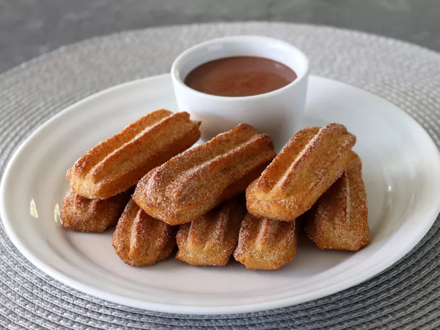

Churros

Description
Baked Churro Bites - "Just As Good, If Not Better?"
No, they don't have the same crispy, crusty exterior the fried version features, but what they do
have is pretty much everything else.
The interior texture, and flavor are virtually identical; and if use a star tip to pipe them, so
is the appearance. Plus, they're both perfect dipped into thick, rich, Spanish-style hot chocolate,
which may be the most important similarity.
Ingredients
- 1 1/4 cups water
- 5 tablespoons cold unsalted butter
- 2 packed tablespoons brown sugar
- 1/2 teaspoon salt
- 1 1/4 cubs all-purpose flour
- 1 teaspoon vanilla extract
- 2 large eggs
- 2 tablespoons melted butter for brushing on before sugaring
- Cooking spray
Cinnamon Sugar:
- 3/4 cup white sugar
- 1 tablespoon cinnamon
- 1/4 teaspoon salt
Steps
- Combine water, butter, brown sugar, and salt in a saucepan over medium heat and bring to a simmer.
Add flour all at once and cook, until a soft, sticky dough ball forms, and a starchy film coats the
bottom of the pan, about 5 minutes.
- Continue cooking for about 1 minute more, scraping the film off the bottom of the pan as you stir.
You won't have a clean bottom surface, but some will be reabsorbed by the dough.
- Transfer to a bowl and let cool for 10 minutes.
- Add in vanilla extract and eggs, 1 at a time, and mix in using a spatula. The mixture will
seperate at first, but eventually it will smear together into a sticky dough.
- Preheat the oven to 425 degrees F (220 degrees C). Line 2 baking sheets with silpat mats or parchment paper.
- Transfer dough into a pastry bag fitted with a star tip. Pipe out 3 to 4 inch ropes onto the prepared baking sheets,
spaced a few inches apart. Use the back of a knife to "cut" through dough at the end of each piping,
to get a clean end. Since this makes 28 to 30 bite-sized churros, pipe 14 to 15 onto each baking sheet.
- Once piped, spray tops of the curros with a vegetable oil spray, and then spray water generously all over the pan.
- Bake in the preheated over until churros are puffed and the edges are browned, 20 to 25 minutes.
Turn off the oven, and open the door for about 10 seconds to vent heat. Close the door, leaving it open about 8 to 12
inches, and let churros rest in the oven for 10 minutes.
- Remove from the oven, and working in batches of 6 at a time, brush them lightly with melted butter, and then toss to coat in a bag of cinnamon sugar.